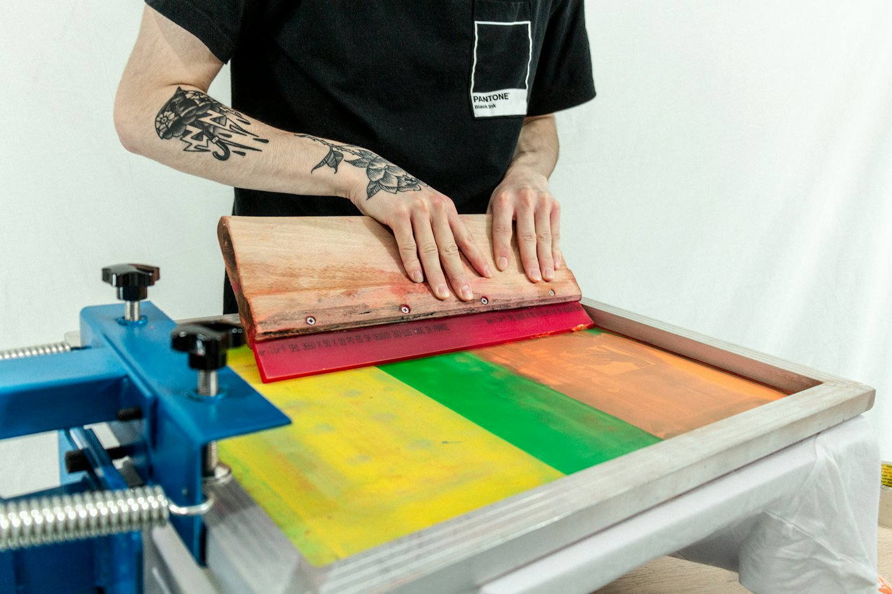
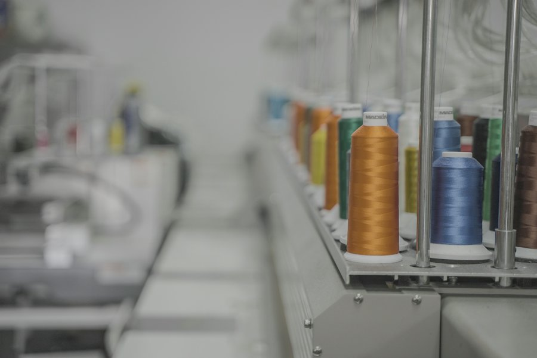
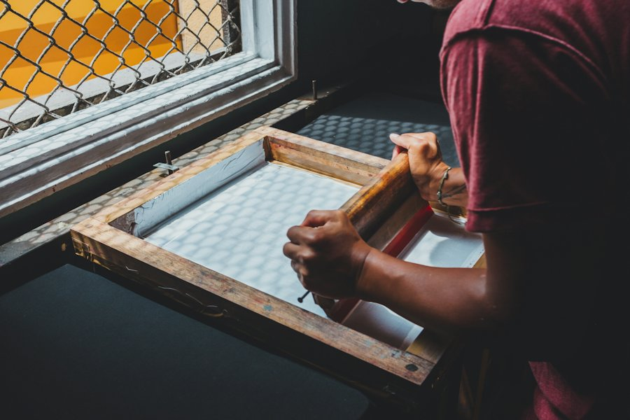

Votre nom,
votre logo, sur tout textile.
Marquage textile et broderie depuis 2013. Tee-shirts d'équipe, tenues de travail, cadeaux, petites et grandes séries, faits en Bretagne.

Marquage et broderie
Personnalisation textile
Tee-shirts, sweats, polos, tabliers : votre visuel imprimé sur le support choisi, de la pièce unique à la série.
Broderie
Logo brodé sur polos, vestes et casquettes, pour une tenue d'entreprise qui tient dans le temps.
Clubs et associations
Tenues d'équipe, maillots, sweats de club ou d'école de voile : on prépare la commande avant la saison.
Événements et cadeaux
Enterrement de vie, fête de famille, départ en retraite : un textile marqué pour garder un souvenir.
Une équipe jeune et dynamique
Olivier, Christelle et Anne
La Tyshirterie change de mains et garde son savoir-faire. Même atelier, même adresse, et une nouvelle équipe prête à reprendre vos commandes habituelles comme les nouveaux projets.

De l'idée au carton
- Vous envoyez votre logo ou votre idée, avec les quantités et les tailles.
- On vous propose les textiles, la technique et un devis.
- Vous validez le visuel avant le lancement.
- Vous récupérez votre commande à l'atelier.

Un projet ?
Écrivez-nous avec votre visuel, le nombre de pièces et la date souhaitée. On revient vers vous avec un devis.
Passer nous voir
35 rue Guy le Garrec29120 Pont-l'Abbé
Au rond-point du Biocoop. Horaires d'ouverture : nous appeler.
La Tyshirterie est installée à Pont-l'Abbé uniquement. Une autre enseigne au nom proche existe à Penmarc'h, sans lien avec l'atelier.